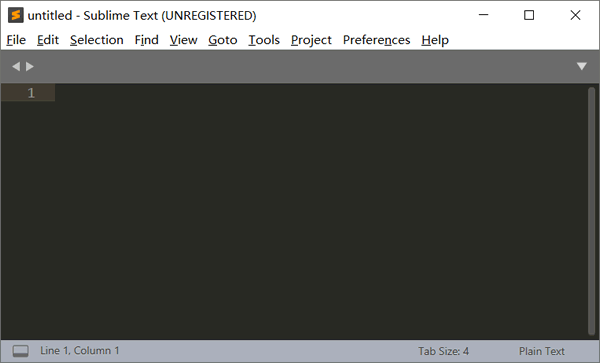
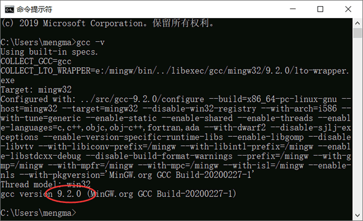
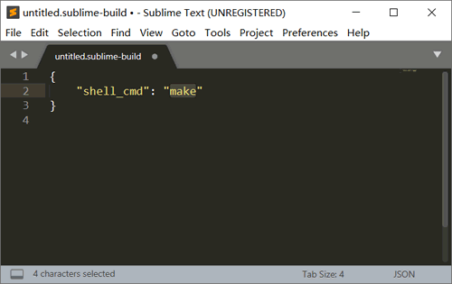
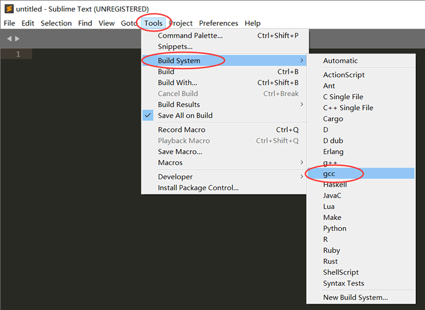
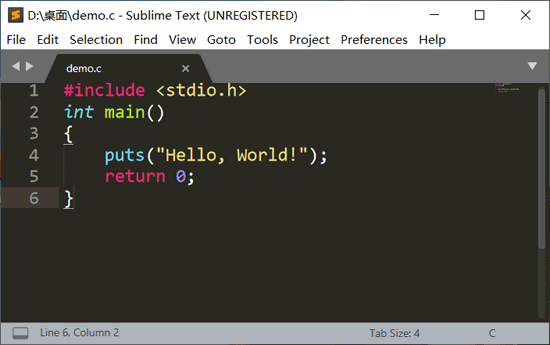
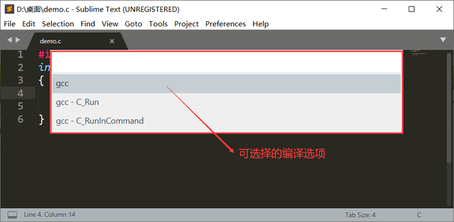
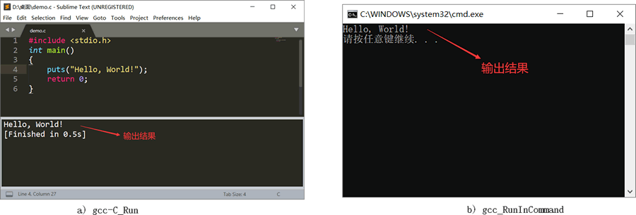
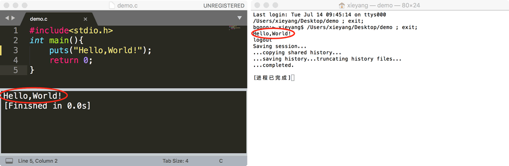
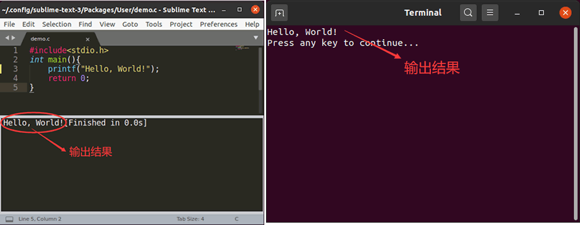

Sublime Text运行C和C++程序
在程序员眼中，Sublime Text 不仅仅是一个文本编辑器，它还可以作为代码编辑器。只要对 Sublime Text 进行简单的设置，它就可以自行调用 GCC 编译器编译写好的代码。
考虑到 Sublime Text 跨平台的特性，本节将分别为读者讲解，如何设置 Windows、Linux（以 Ubuntu 为例）以及 Mac OS X 系统中的 Sublime text 编辑器，使其具备执行 C、C++ 程序的能力。
Windows配置Sublime Text
如图 1 所示，是笔者本机已经安装好的 Sublime Text。如果读者尚未安装，先前往 Sublime Text官网下载并安装（安装过程非常简单，这里不做过多赘述）。
图 1 安装好的 Sublime Text
要知道，刚刚安装的 Sublime Text 无法自行具备运行 C、C++ 代码的能力，需要我们手动对其进行设置。不过在开始设置之前，读者需保证当前系统中已经初始化好了 GCC 编译环境。打开命令行窗口，并执行 gcc -v 指令，如果输出 GCC 编译器的具体版本等信息，表明当前系统以成功配置了 GCC 编译环境（如图 2 所示）。

图 2 配置 GCC 编译环境
在已安装好 GCC 编译器的基础上，接下来开始正式配置 Sublime Text 编辑器。如果读者所用环境中尚未配置 GCC 编译环境，可阅读《MinGW下载和安装教程》一节进行安装。
1) 要想使 Sublime Text 具备运行 C 语言程序的能力，需在菜单栏中依次点击“Tools -> Build System -> New Build System”,由此即可在 Sublime Text 打开一个临时文件，如下所示：

图 3 运行 C 语言程序的配置文件
删除其所有内容，并将如下内容完整地复制到该文件中：
{
"cmd": ["gcc","${file}","-o", "${file_path}/${file_base_name}"],
"file_regex":"^(..[^:]*):([0-9]+):?([0-9]+)?:? (.*)$",
"working_dir":"${file_path}",
"selector": "source.c",
"encoding":"cp936",
"variants":
[
{
"name": "C_Run",
"cmd": ["cmd","/c", "gcc", "${file}", "-o", "${file_path}/${file_base_name}","&&", "cmd", "/c","${file_path}/${file_base_name}"]
},
{
"name":"C_RunInCommand",
"cmd": ["cmd","/c", "gcc", "${file}","-o","${file_path}/${file_base_name}", "&&","start", "cmd", "/c","${file_path}/${file_base_name} & pause"]
}
]
}
按 Ctrl+S 组合键，将此文件保存起来，其中文件名默认为 untitled.sublime-build（untitile 可以自定义，例如 gcc_sublime-build），保存路径即为按 Ctrl+S 弹出的路径（切忌手动修改此路径）。此文件中的内容，实则是运行 C 语言程序时需要执行的 gcc 指令，只不过在 Sublime Text 文件中，需写成以上形式。
2) 重新打开 Sublime Text，并依次在菜单栏中选择“Tools -> Build System”， 在该选项中就可以看到上一步创建好的 gcc_sublime-build 的文件名 gcc，如图 4 所示：

图 4 查看创建好的 gcc 编译选项
通过勾选 gcc 编译选项（直接在图 4 中点击即可），我们就可以直接在 Sublime Text 运行写好的 C 语言程序。比如，在 Sublime Text 编写如下程序：

图 5 SublimeText 中编写 C 语言程序
在此基础上，选择“Tools -> Build With...”选项，此时 Sublime Text 会弹出如下对话框：

图 6 可选择的编译选项
可以看到，这里有 gcc、gcc-C_Run 和 gcc-RunInCommand 3 个选项，其中 gcc 用于编译程序（读者可自行查看执行结果），gcc-C_Run 用于在 Sublime Text 内部调用 GCC 编译器并显示程序的执行结果（如图 7 a) 所示），gcc_RunInCommand 用于在命令行窗口中借助 gcc 指令运行该程序并输出执行结果（如图 7 b) ）。

图 7 各个选项的功能
同样，如果想使 Sublime Text 具备执行 C++ 程序的能力，则只需再建立一个 g++_sublime-build 配置文件，并将如下内容拷贝到该文件中：
{
"cmd": ["g++","-Wall", "${file}", "-o", "${file_path}/${file_base_name}"],
"file_regex": "^(..[^:]*):([0-9]+):?([0-9]+)?:? (.*)$",
"working_dir": "${file_path}",
"selector": "source.c, source.c++",
"encoding":"cp936",
"variants":
[
{
"name": "C++_Run",
"cmd": ["cmd", "/c", "g++", "-Wall","${file}", "-o", "${file_path}/${file_base_name}", "&&", "cmd", "/c", "${file_path}/${file_base_name}"]
},
{
"name": "C++_RunInCommand",
"cmd": ["cmd", "/c", "g++", "-Wall","${file}", "-o", "${file_path}/${file_base_name}", "&&", "start", "cmd", "/c", "${file_path}/${file_base_name} & echo.&pause"]
}
]
}
Mac OS X配置Sublime Text
Mac OS X 系统中，使 Sublime Text 具备执行 C、C++能力的配置过程，和 Windows 系统中的配置步骤大致相同，有以下 2 点不同：- 默认情况下，该操作系统中已默认安装有 GCC 编译器，所以如果读者对编译器版本没有刻意的要求，则可以省略安装 GCC 的过程；
- 在 Mac OS X 系统中，需要修改 gcc_sublime-build 文件中的内容。
若想使 Sublime Text 具备执行 C 语言程序的能力，在菜单栏中依次点击“Tools -> Build System -> New Build System”，创建一个 gcc.sublime-build 配置文件，其文件内容如下：
{
"cmd" : ["gcc -o ${file_base_name} $file_name"],
"shell" : true,
"working_dir" : "$file_path",
"selector": "source.c",
"variants" :
[{
"name" : "c_Run",
"cmd" : "./${file_base_name}"
},
{
"name": "c_RunInCommand",
"shell_cmd": "open -a Terminal.app '${file_base_name}'"
}]
}

图 8 Mac OS X配置Sublime Text
可以看到，使用如上指令调取命令行窗口执行 C 语言程序，除执行结果外，还会显示其它无用的信息。因此建议读者使用 c-Run 编译选项执行 C 语言程序，简单方便。
同理，通过创建 g++.sublime-build 配置文件，并将如下内容拷贝到该文件中：
{
"cmd" : ["g++ -o ${file_base_name} $file_name"],
"shell" : true,
"working_dir" : "$file_path",
"selector": "source.cpp",
"variants" :
[{
"name" : "c_Run",
"cmd" : "./${file_base_name}"
},
{
"name": "c_RunInCommend",
"shell_cmd": "open -a Terminal.app '${file_base_name}'"
}]
}
Ubuntu配置Sublime Text
要知道，Ubuntu 系统默认是不安装 GCC 编译器的，因此在配置 Sublime Text 之前，读者要自行安装 GCC 编译器（执行 sudo apt install gcc 指令即可安装）。安装 GCC 编译器之后，即可开始配置 Sublime Text。Sublime Text 的配置过程和在 Windows 环境中大致相同，唯一不同之处在于，要修改 xxx.sublime-build 配置文件（读者可自定义 xxx 的内容）中的内容。
如果要使 Sublime Text 具备执行 C 语言程序的能力，则可以依次选择“Tools -> Build System -> New Build System”并创建一个 gcc.sublime-build 配置文件，其中包含如下内容：
{
"encoding": "utf-8",
"working_dir": "$file_path",
"shell_cmd": "gcc \"$file_name\" -o \"$file_base_name\"",
"file_regex": "^(..[^:]*):([0-9]+):?([0-9]+)?:? (.*)$",
"selector": "source.c",
"variants":
[
{
"name": "c_Run",
"shell_cmd": "./${file_base_name}"
},
{
"name": "c_RunInCommand",
"shell_cmd": "gnome-terminal -x bash -c \"'${file_path}/${file_base_name}';read -p '\nPress any key to continue...'\""
}
]
}
如果想使 Sublime Text 具备执行 C++ 程序的能力，则可以创建一个 g++.sublime-build 配置文件，将如下内容拷贝到该文件中：
{
"encoding": "utf-8",
"working_dir": "$file_path",
"shell_cmd": "g++ \"$file_name\" -o \"$file_base_name\"",
"file_regex": "^(..[^:]*):([0-9]+):?([0-9]+)?:? (.*)$",
"selector": "source.cpp",
"variants":
[
{
"name": "c++_Run",
"shell_cmd": "./${file_base_name}"
},
{
"name": "c++_RunInCommand",
"shell_cmd": "gnome-terminal -x bash -c \"'${file_path}/${file_base_name}';read -p '\nPress any key to continue...'\""
}
]
}

图 9 Ubuntu配置Sublime Text
关注公众号「站长严长生」，在手机上阅读所有教程，随时随地都能学习。内含一款搜索神器，免费下载全网书籍和视频。

微信扫码关注公众号